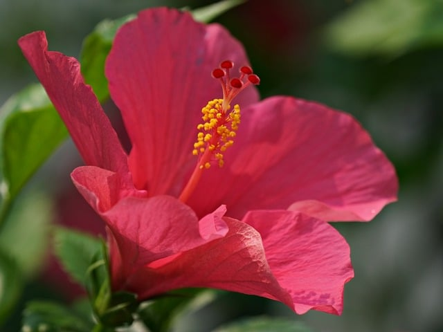
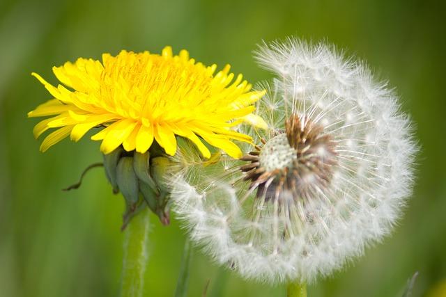
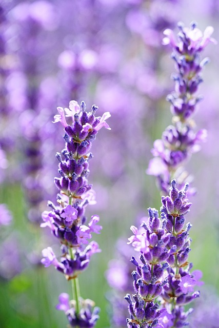
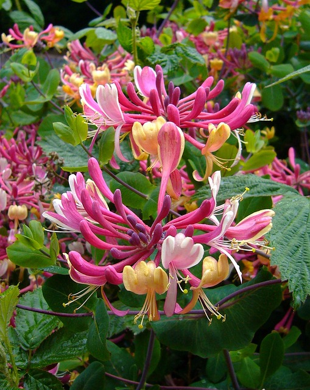
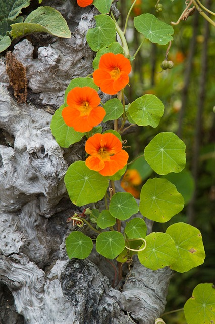
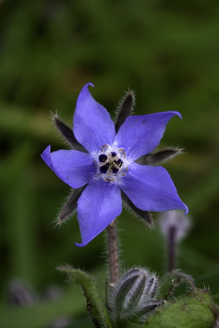
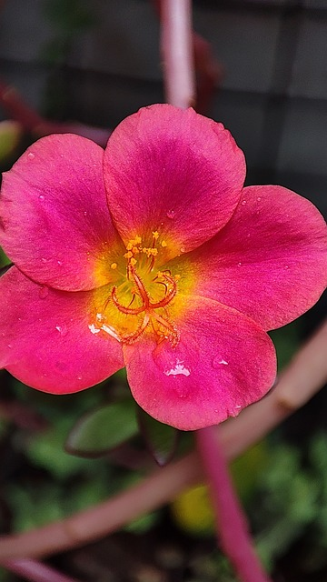
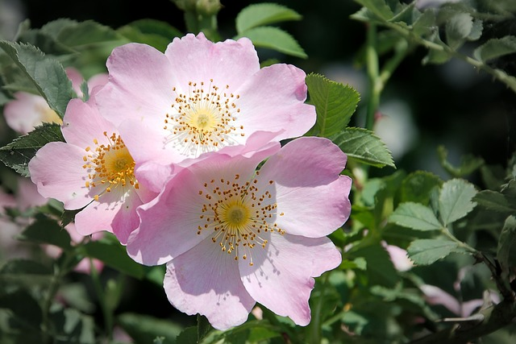
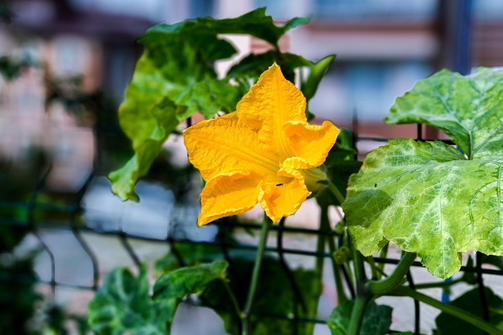
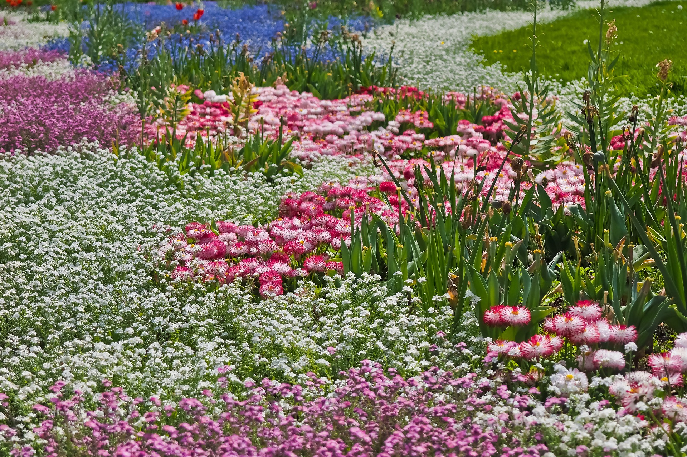

Hibiscus is used to treat eczema (as an ointment or cream),
colds, circulatory problems and cramps. It also stimulates the
metabolism, strengthens well-being and the immune system. Overall,
that's why it works detoxifying, laxative, thirst quenching,
antispasmodic, antibacterial and bilious.

Dandelions are rich in bitter substances. They ensure that
saliva and stomach acid as well as digestive hormones and enzymes are
produced, thereby improving metabolism and bile drainage. Dandelion
has a digestive effect, urinary promoting or diuretic, calming
(sedative), anti-inflammatory.

Lavandula Angustifolia has an effect on the psyche, heals
wounds and cares for the skin and hair. The essential oil of real
lavender is considered particularly noble and high quality.
Lavandula Stoechas, on the other hand, has relatively strong
antibacterial, antiviral and antifungal properties.

Real honeysuckle has a diaphoretic and diuretic effect, but is
no longer used today because
it is not possible to dose it without causing symptoms of
poisoning.

Nasturtiums have strong antibacterial and antifungal
properties. It helps with various complaints such as urinary tract
inflammation, bronchitis, runny nose and sinusitis. Applied
externally, the circulation-promoting effect of mustard oils is used
for bruises and sports injuries.

Borage oil is used for skin swelling, chronic inflammation or
pain. Borage oil is so popular as a natural anti-inflammatory
supplement because it has one of the highest gamma-linolenic acid
contents of all seed oils.

Purslane is used against vitamin deficiencies. In addition to
vitamin C, purslane also contains other vitamins (A and B) and plenty
of minerals, such as calcium, magnesium, iron and potassium.

Rose oil is used as a remedy for liver and gallbladder
problems, for “heavy heads” and for lovesickness. It is considered to
be antidrepessive, antiseptic, antispasmodic, astringent, menstrual
stimulant, hemostatic, liver effective, spleen effective, stomach
effective, tonic.

Pumpkin has a laxative, diuretic, calming, restorative and
immune-strengthening effect. It is used for stomach and intestinal
diseases as well as for heart and kidney diseases because it has a
high proportion of potassium and magnesium and this reminalizes the
organism.

Pansy has anti-inflammatory and analgesic properties. It can
also be used as a cure for gout and rheumatism. The wild pansy is
particularly valued in applications for children, for example as a
wash for diaper rash and cradle cap.

Chamomile has anti-inflammatory, antispasmodic, wound healing,
antibacterial and odor-binding effects. Chamomile is particularly
valuable for skin and mucous membrane diseases. Because of its
anti-inflammatory effect, it is often part of wound and healing
ointments.

Click here, if you want to get back
to the flower page with
the fish pond
_